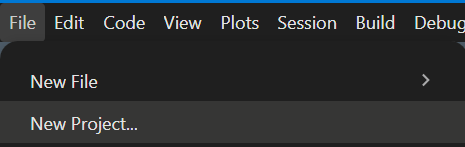
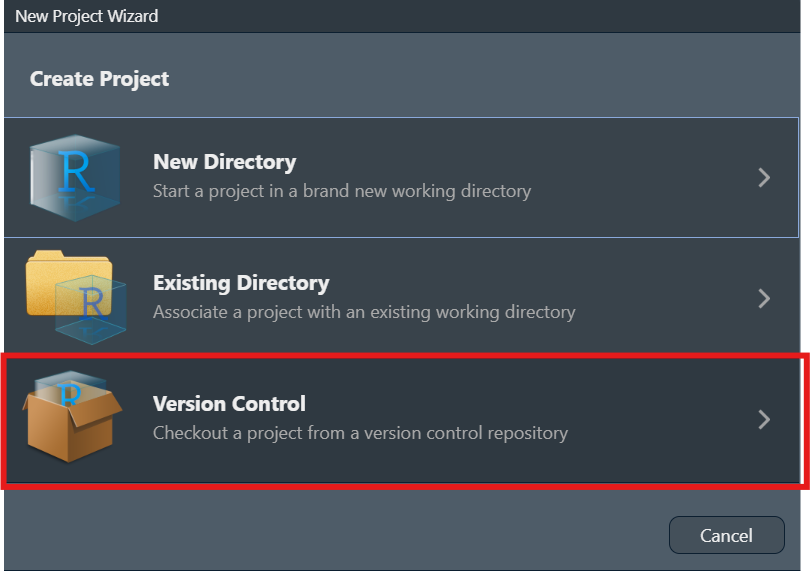
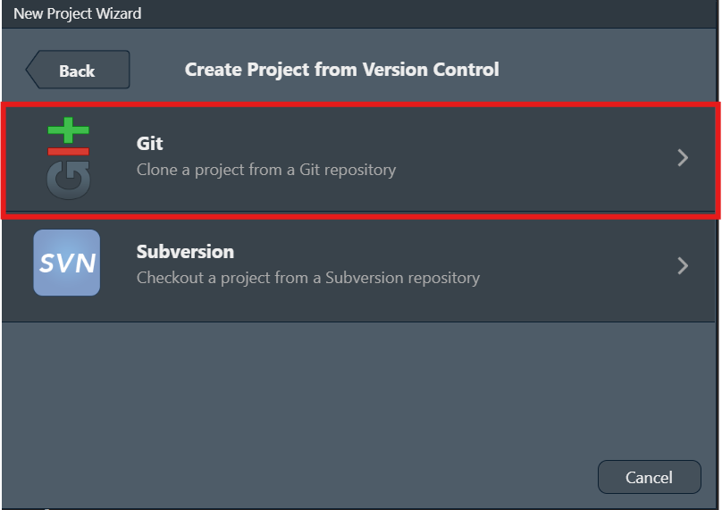
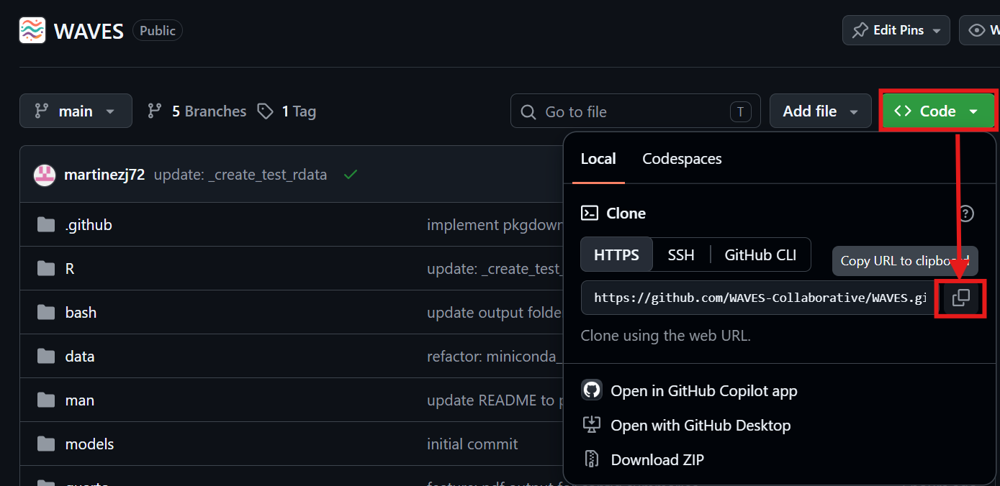
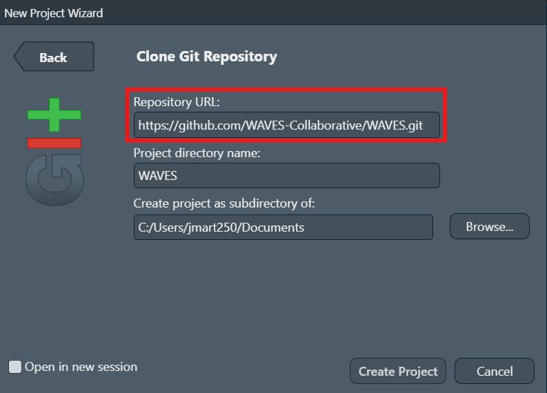
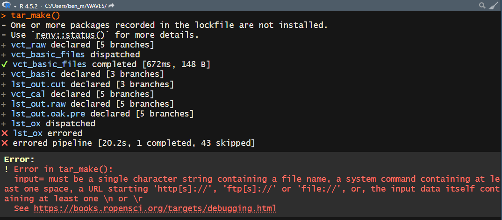
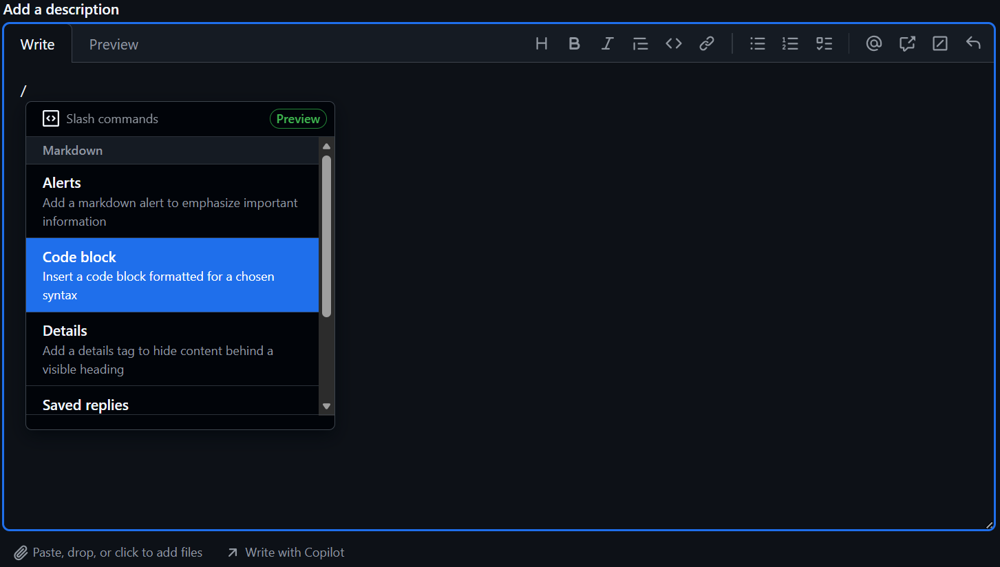

Preliminary Setup
For the following steps, administrator access should not be needed.
-
Install R
From this CRAN mirrors webpage, click on the mirror from the location closest to you.
On the following page, download and install R for your operating system. So far, only Windows and macOS have been tested.
The code has been tested on v4.4.1 and v4.5.2. We recommend the latest v4.5.2. but earlier versions down to 4.4.0 should work. Just note you will get warning messages that the packages were developed for 4.5.2.
-
Install RStudio
- From this POSIT RStudio webpage, click on the “DOWNLOAD RSTUDIO DESKTOP FOR WINDOWS/MACOS”
- A version from 2023 onwards should be okay.
-
Install compilation tools (platform-specific)
Windows:
- From the CRAN RTools webpage, download the RTools version specific to the R version being used (i.e. Rtools 4.4 for R v4.4.1, RTools 4.5 for R v4.5.2)
macOS:
Several R packages need to be compiled from source. Install the following dependencies via Homebrew by running the following command within the system shell (Terminal):
brew install cmake gcc gettextThen create
~/.R/Makevarsso R can find the installed libraries by running the following code within the system shell (Terminal):mkdir -p ~/.R cat > ~/.R/Makevars << 'EOF' CPPFLAGS += -I/opt/homebrew/opt/gettext/include LDFLAGS += -L/opt/homebrew/opt/gettext/lib -lintl -L/opt/homebrew/opt/gcc/lib/gcc/current FLIBS = -L/opt/homebrew/opt/gcc/lib/gcc/current -lgfortran -lquadmath FC = /opt/homebrew/bin/gfortran F77 = /opt/homebrew/bin/gfortran EOFAdditionally, the
arrowR package requires setting an environment variable before runningrenv::restore(). Run the following within the system shell (Terminal):export LIBARROW_BINARY=trueThis tells the package to download a pre-built Arrow C++ library instead of compiling against the system version.
-
Install Git by going to git install webpage. There, select your operating system and follow the instructions on the webpage.
- In the git setup wizard, select all the default options.
-
Open the RStudio application. In the Navigation bar at the top left corner, click File -> New Project…

-
In the New Project wizard pop-up, click “Version Control”.

-
Then, click “Git”.

-
Go to the WAVES github page, Click on the green “Code” button, and click the “Copy to Clipboard” button.

-
Go back to the RStudio New Project pop-up and paste the WAVES Github link in the Repository URL section. The “Project directory name” will automatically appear as WAVES.

-
Choose location of WAVES repository in the “Create project as subdirectory of” section.
- The location of the WAVES repository can generally be downloaded anywhere on your system. However, it is HIGHLY recommended to:
- Download the repository on a mapped network drive or on the actual computer system itself, NOT on the cloud such as OneDrive.
- Not save it directly under a directory with the following names:
bash,data,logs,media,models,quarto,R,renvorreports. - Keep it on the same drive where the raw accelerometer data is located.
- The location of the WAVES repository can generally be downloaded anywhere on your system. However, it is HIGHLY recommended to:
Click the “Create Project” button.
You are now ready to start running the configuration pipeline! See vignette("instructions-config") to continue.
Notes
Even if a pipeline finishes successfully, you may see in the console “There were XX warnings (use warnings() to see them)”. This is normal if working on an R version that is not 4.5.2., as the messages will be warnings that the packages are meant to work on the latest R version. As long as the R version being used is R 4.4 or beyond, everything should still work. We have not tested the WAVES repository on R versions below 4.4.
If working on a high performance cluster…TODO (work with Hayden, Ben on swarm and batch scripts)
-
If the pipeline appears “stuck” after 24hrs, as in it looks like there has been no change in the processing time or the console messages have been the same for quite awhile, its most likely that your computer does not have enough computing resources to do parallel processing. In that case:
- Stop the pipeline by clicking the “STOP” button that appears in the top right corner of the Console pane.

- Change the
n_workersobject to 2. Ifn_workersis already set to 2, then please run the WAVES repository on a computer system with better specifications, or reach out to the WAVES team for further discussion.
-
Resetting conda environments: Once the WAVES repository has been installed, major version changes to the pipeline may result in prior conda environment installations to be outdated. Unfortunately, re-running the configuration pipeline by itself may not be sufficient, which will require removing the existing environments entirely before rerunning the configuration pipeline. To do so, first run the code within the INPUT section of
_targets_config.R. Then, run the following code within the R console:library(reticulate) conda_remove("WHO_WAVES_stepcount") conda_remove("WHO_WAVES_accelerometer") conda_remove("WHO_WAVES_actinet") conda_remove("WHO_WAVES_oak_1.0") conda_remove("WHO_WAVES_oak_pre")After removal, re-run the config pipeline (
tar_make()) and it will recreate the missing environments.
Posting an Issue on GitHub
After navigating to the Issues tab of WAVES, please use the following naming convention for the title of the issue:
[Pipeline] - [Target/Report] - [Quick Description]where:
-
Pipeline:
ConfigorMain- If the error occurred while running the
Configpipeline orMainpipeline.
- If the error occurred while running the
-
Target/Report: any of the targets within a pipeline or a report such as
summary_pipeline_mainorsummary_minicondaA “target” is another name for a step within the pipeline.
The target that errored is usually what appears after an ❌. So in Step 7 of the Configuration pipeline instructions, the target was
fpa_merged-
The following is a list of targets within the pipelines where errors may occur:
vct_raw
vct_raw_type
vct_basic
lst_out.cut
vct_ox_input
vct_ox_step
vct_ox_wlms
vct_ox_acti
lst_ox
vct_cal
lst_out.raw
lst_out.oak.pre
fpa_merged
pipeline_summary
-
The below only appear within the
configpipeline:lst_miniconda
minconda_summary
Quick Description: The error itself if it is ≤ 10 words or a summary
Within the description of the issue, please either:
- screenshot your console that includes the pipeline output and the error itself (example below)

-
Copy the output from the console into a codeblock
- With the description box highlighted, enter a forward slash
/and then select “Code Block”

For language, select “R”
Within the code block, paste the console output
- With the description box highlighted, enter a forward slash
Additionally, if the error occured at lst_out.raw , vct_ox_step , vct_ox_wlms , vct_ox_acti lst_out.raw or lst_out.oak.pre , then please also attach the “summary_miniconda.html” report.